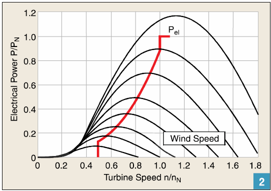
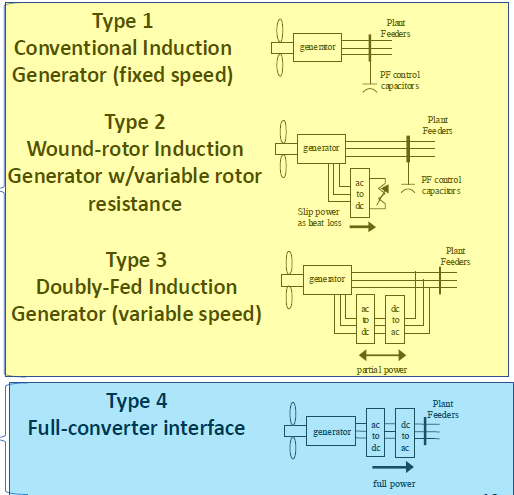
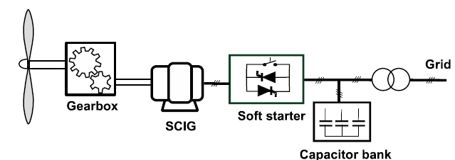
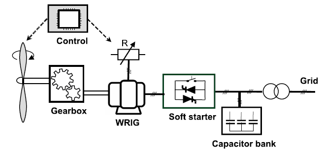
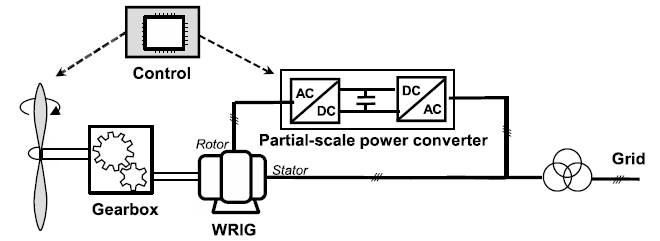
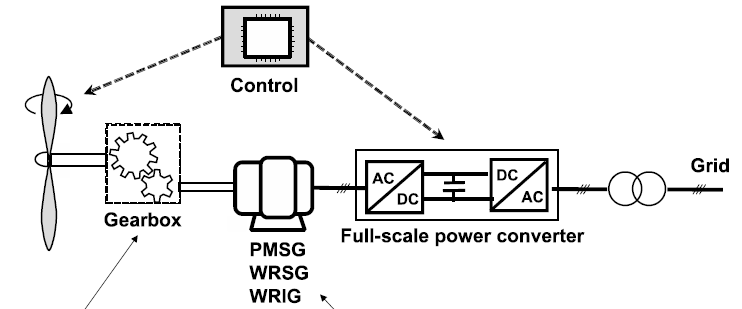

EE600 Week 6 Notes
1 IBR and Variable Speed Generation
1.1 Synchronous Machine
- Sinusoidally distributed balanced \(3\phi\) stator windings
- The Rotor field winding is energized with DC Current \(I_f\)
- The Field \(B_f\) rotates synchronously with the rotor at speed \(\omega\):
- Induces sinewave voltages in stator windings
1.1.1 Synchronous Machine Operation
- Ideal cylindirical-rotor machine connected to an infinite bus.
- The infinite bus represents a busbar of constant voltage, which can deliver or absorb active and reactive power without any limitations.
- The ideal machine has zero resistance and leakage reactance, infinite permeability, and no saturation, as well as zero reluctance torque.
- The production of torque in the synchronous machine results from the natural tendency of two magnetic fields to align themselves.
- The magnetic field produced by the stationary armature is denoted as \(\phi_s\).
- The magnetic field produced by the rotating field is \(\phi_f\).
- The resultant magnetic field is \[ \phi_r = \phi_s + \phi_f \]
1.2 Basic Induction Machines
- Sinusoidally distributed balanced \(3\phi\) stator windings
- Rotor speed is generally non-synchronous:
- Rotor can turn faster (generator) or slower (Motor) than input frequency
- Would Rotors
- Rotor windings brought out through sliprings. Allowing speed/torque control.
- Squirrel-Cage Rotors
- Rotor windings are simple, shorted bars, cast inot rotor laminations.
- Low-cost, Rugged, commercial/industrial work-horse
- First Wind Turbines
1.3 Frequency, Voltage, and Generator Speed
- \[ \text{Generator Frequency } (f) = {{\text{Number of revolutions pwer minutes } (N) * \text{Number of Magnetic Poles } (P)} \over 120}\]
\[ f = {{NP} \over 120} \]
- The main factors affecting the generator voltage
- Number of turns of the stator windings
- The strength of the magnetic field
- The rotational speed of the rotor.
- The output load of the alternator.
- The Impedance of the load.
V controlled by excitation
F controlled by speed of rotation
120 is a constant to allow for the conversion of minutes to seconds and from poles to pairs of poles.
1.4 Why Variable Speed?
- Wind turbine speed is adjusted as a function of wind speed to maximize output power.
- Operation at the maximum power point can be realized over a wide power range.
- Small hydro turbines power output is also maximized using variable speed generation.
1.5 MPPT and Variable Speed Systems
- Electrical output power as a function of turbine speed parameter curves are plotted for different wind speeds.
- Maximum Power Point Tracking (red curve) can be realized with a variable speed system.

1.6 Electric Generators

Types 1-3 are induction generators and must have gearboxes to change “slow” rotor rotational speed (5-20 rpm) to “fast” generator rotational speed (750-3600 rpm) needed by the 60 Hz grid freq seen in stator winding.
Type 4 maintains generator at “slow” rotor rotational speed producing low freq in stator winding which is transformed by converter to grid. Also called “direct-drive.” Usually uses a PM synchronous generator.
1.6.1 Fixed Speed Wind Turbine - Type 1

- Fixed Speed - limited control of slip (2-3%) and Real Power - Consumes VARs - The wind turbine rotor blades may be pitch-regulated to control power.1.6.2 Limited Variable Speed Wind Turbine - Type 2

- Variable Speed - More Control of Slip (up to 10%) - Consumes VARs - Variable Rotor Resistance via slip rings with wound rotor IG.1.6.3 Variable-Speed Wind Turbines with Partial-Scale Power Converter - Type 3

- Variable Speed - More control of slip (up to 50%) - Can Control VARs - Partial Scale Converters Required (~30% of Machine)1.6.4 Variable-Speed Wind Turbines with Full-Scale Power Converter - Type 4

An opportunity to eliminate the gearbox exists. Since wild AC from generator can be conditioned to 60 HZ grid.
Machine’s excitation can be controlled by machine side converter- Can use any type of machine, field wound SG, PM-SG or IG
- Variable Speed - Wide control of slip (up to 100%)
- Can control VARs
- Full Scale Converters Required (>100% of Machine)
1.7 Inverter Systems
1.7.1 Power Electronics Role in Modern Power Systems
- Power conversion and conditioning
- DC to AC for PV
- AC-DC-AC conversion for Wind Systems
- Power control for maximum power
- Ensuring grid interconnect requirements
- Grid support and mimicking conventional generator characteristics (inertia)
- ‘Smart grid’ functions
- FACTS (flexible ac trnamission system) and other power control devices in tranmission systems
- Interface for various types of energy storage, including electric vehicles as storage (V2G)
2 Achieving a 100% Renewable Grid (Notes)
2.1 Dealing with Variability and Uncertainty
Variable Renewable Energy (VRE) such as wind and solar photovoltaic (PV). Wind and solar have variable and uncertian power output determined by local weather conditions.
Many factors required greater grid flexibility to accomodate the for more VRE
PV power has a natural diurnal cycle and it does not produce at night. Leading to larger net load ramps than might otherwise be seen in the evenings.
Wind as a less pronounced diurnal cycle. In the US it produces more power at night or during large changes of weather conditions in large geographic areas.
Both can combines to produce too much energy during a single surge and curtailment of these must be perfomed.
“Curtailment decisions rely on a complex set of variables, including the flexibility of the remaining generation fleet.”
Solutions to VRE limitations include:
- “smoothing of overall VRE power output through sufficient ammounts of geographic diversity when siting the VRE generators”
- “expansion of the transmission system to be able to move large amounts of power more efficiently from regions where VRE generators are currently producing to the areas where load is currently needed.”
“Technology that allows temporal shifting of VRE is energy storage.”
Energy storage can shift power from times when it mithg otherwise be curtailed to times when the power output from VRE is lower.
Multiple power storage technologies: - pumped hydropower fleet - compressed aire energy storage systems - various battery technologies
Demand-response technologies by shifting load demand to where it’s necessary.
New loads that have flexibility can play a similar role.
“Characterizing or reducing uncertainty associated with VRE output or load enables a more efficient utilization of the entire power system”
3 Homework
Use the Reading References in this section to answer TWO questions below:
- Review the technologies needed to allow for more renewable energy resources to be integrated to the power grid.
- Discuss the different approaches to maintain grid inertia with high penetration of renewable energy resources.
3.1 Reading 1
- Review the technologies needed to allow for more renewable energy resources to be integrated in the power grid.
- smoothing of overall VRE power output through sufficient amounts of geographic diversity and expansion of the transmission system to be able to move large amounts of power more efficiently from regions where VRE generators are currently producing to other areas can both be accomplished through greater coordination among balancing authority areas and faster interchange intervals.
- Energy storage has value in the power system at many timescales, the most important of which is in shifting wind and solar power from times when it might otherwise be curtailed to times when the power outpu tof VRE is lower than current demand.
- … will play a key role in managing energy balance in systems with high penetrations of VRE, and it is also interfaced with the grid through inverters.
- Advanced renewable energy and load forcastin can characterize an reduce uncertainty associate with VRE output or load enabling a mor eefficient utilization of the entire power system.
- Inverter technologies are important because they are used across a wid variety of applications.
- The characteristics of the chosen control strategy dictates the electircal dynamics of the inverter during disturbances and how it interacts with the grid on its AC side.
- Next-generation grid-forming inverters that enable the transition to an inverter based infrastructure and are capable of regulating system voltages and frequrency through local decentralized control.
- Discuss the different approaches to maintain grid inertia with high penetration of renewable energy resources.
- Next-generation grid-forming inverters that enable the transition to an inverter based infrastructure and are capable of regulating system voltages and frequrency through local decentralized control.
- Controller design or active power controllers for VRE can provide a synthetic inertia response to stabilize frequency excursions.
- may allow wind turbines of injectin additional active power into the grid by extracting the eneryg stroed in the rotating mass of blades and generators. PV inverters can also provide inertia-like response if curtailment is utilized.
3.1.1 From LLM
- Technologies for Integrating Renewable Energy Resources To effectively integrate more renewable energy resources into the power grid, several key technologies are essential:
Inverter-Based Systems: The shift from traditional synchronous generators to inverter-based systems is critical for accommodating renewable energy sources (RES) like wind and solar. Inverters convert direct current (DC) generated by solar panels and wind turbines into alternating current (AC) for grid use. Advanced inverter technologies can provide grid support functions, such as voltage regulation and frequency control, which are vital for maintaining grid stability.
Advanced Control Strategies: The implementation of next-generation grid-forming inverters is necessary to ensure reliable operation in inverter-dominated grids. These inverters can autonomously manage voltage and frequency, mimicking the behavior of conventional synchronous generators. By employing sophisticated control algorithms, they can respond to grid disturbances and maintain stability, even with high levels of variable renewable energy.
Energy Storage Solutions: Energy storage technologies, such as batteries, pumped hydro storage, and flywheels, play a crucial role in managing the variability of renewable energy generation. These systems can store excess energy produced during peak generation periods and release it during times of low generation or high demand. By providing backup power and balancing supply and demand, energy storage enhances grid reliability and facilitates the integration of more RES.
Demand Response Programs: Implementing demand response strategies allows for the adjustment of electricity consumption in response to supply conditions. By incentivizing consumers to reduce or shift their energy usage during peak periods or when renewable generation is low, demand response can help balance the grid and reduce reliance on fossil fuel-based generation.
Smart Grid Technologies: The adoption of smart grid technologies, including advanced metering infrastructure and real-time monitoring systems, enables better management of renewable energy resources. These technologies facilitate communication between grid operators and consumers, allowing for more efficient energy distribution and improved integration of distributed energy resources.
3.2 From Reading 2
- Discuss the different approaches to maintain grid inertia with high penetration of renewable energy resources.
ERCOT (Texas Grid) has historically relied on loads as a source of frequency response (called “load resources”). Equipping certain large industrial loads with snesors that measure frequency and are programmed to disconnect automatically when the frequency drops to a certain level.
The use of loads as a source of frequency response allows ERCOT to maintain frequency while providing other benefits, such as potentially more efficient system operation.
Summary of Options to Maintain Frequency Stability
- Maintain Inertia
- System operation
- Synchronous renewable energy
- Synchronous condensers
- Provide More Response Time
- Reduced contingency size
- Reduced UFLS (underfrequency load shedding) settings
- Fast Frequency Response
- Load
- Extracted wind kinetic energy
- Dispatch of inverter-based resources
- Additional or enhanced primary frequency response
- Maintain Inertia